除了《你的名字》，还有哪些动画电影值得一看？
真正的好电影
是看了枪版之后还想去电影院里看正版
《你的名字》就是这样一部电影
是啊一点都不好看
我也就看了一百遍而已(๑ó⌓ò๑)
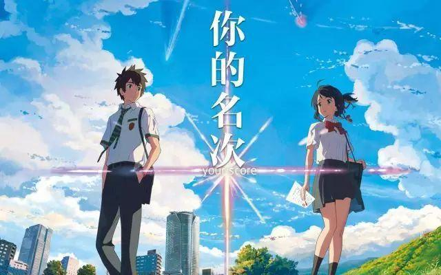
在一个十二月的日子里，除了三刷《你的名字》，还有什么电影可以在写年终总结和复习四级的时候忙里偷闲看一看呢？ᕕ( ᐛ )ᕗ
爱情
1
大鱼海棠
国家：中国
年份：2016
豆瓣评分：6.6
IMDb评分：7.6
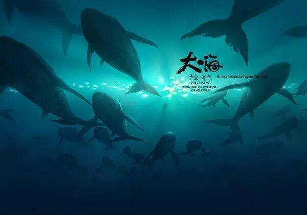
四十五亿年前，这个星球上，只有一片汪洋大海，和一群古老的大鱼。在与人类世界平行的空间里，生活着一个规规矩矩、遵守秩序的族群，他们为神工作，掌管世界万物运行规律，也掌管人类的灵魂。他们的天空与人类世界的大海相连。他们既不是神，也不是人，他们是“其他人”。
十六岁生日那天，居住在“神之围楼”里的一个名叫椿的女孩变作一条海豚到人间巡礼，被大海中的一张网困住，一个人类男孩因为救她而落入深海死去。为了报恩，为了让人类男孩复活，她需要在自己的世界里，历经种种困难与阻碍，帮助死后男孩的灵魂——一条拇指那么大的小鱼，成长为一条比鲸更巨大的鱼并回归大海。
2
云的彼端，约定的地方
国家：日本
年份：2004
豆瓣评分:7.9
iMDb评分:7.3
战争之后，日本被分为南北两个部分。美军统治西的青森县，少年藤泽浩纪和白川拓也都喜欢同年级的同学泽度佐由理。他们的心中都有佐由理，还有那个东西——边境以北的津轻海峡，日本北海道联盟建立的高耸云端的“塔”。他们约定，建造小型飞机，飞向塔去一探究竟。
中学三年级佐由理转学到东京。两位少年放弃了制造飞机的打算，彼此在各自的道路上越走越远。
但是，多年后，佐由理在医院中陷入沉睡！这突如其来的病症让三人再次聚在一起。
卷入战争与爱情的三人，到底是救佐由理，还是救世界！命运的解答，似乎就在云的那一端，他们曾经约定的地方。
3
侧耳倾听
国家：日本
年份：1995
豆瓣评分：8.8
IMDb评分：8.0
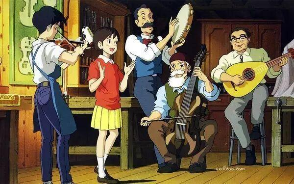
正在读初三的月岛滴滴是一个喜欢看书的女孩，她每次都能在借书卡上看到一个叫天泽圣司名字，因此她对这个人充满了好奇。
滴滴一直喜欢写诗，有一天她跟好友夕子在讨论写诗的事，夕子告诉滴滴自己收到了情书，但事实上夕子已有了喜欢的人。更没有想到的是，夕子喜欢的杉村喜欢的是滴滴，滴滴一时间感到十分困惑。
滴滴无意中来到了一个小店，原来店主是圣司的爷爷。认识了圣司之后，听到了圣司对自己理想的追求之后，也激发了滴滴对自己理想的追求之念。当圣司离开了到意大利学习做小提琴时，滴滴决定要专心写作。当滴滴完成了作品之后，她发现原来自己高估了自己，就这样她选择继续考高中，这时她非常想念圣司。
一天凌晨，她站到窗边，突然看到了一个熟悉的身影……
4
魔发奇缘
国家：美国
年份：2010
豆瓣评分：8.1
IMDb评分：7.8
女巫Gothel靠着一朵神奇的金色花朵保持青春。王后重病，国王派人找到了这朵金花给王后治病，王后病愈，生下了一个一头金发的小女孩Rapunzel。女巫失去金花，却发现小公主的金发有 着同样的魔力，因此她偷走Rapunzel，把她关到森林中的一座没有楼梯高塔之上。
十八年后，Rapunzel在女巫的抚养下长成一个拥有长长金发的美人，她越发渴望外面的世界，女巫则想方设法把Rapunzel留在身边。一天，窃贼Flynn盗取公主王冠后逃入森林，在好奇心趋势下登上了这座神秘的高塔，误打误撞见到了塔中的长发公主。在Flynn的陪伴下，Rapunzel走下高塔，开始了人生和爱情的大冒险。
僵尸新娘
国家：美国/英国
年份：2005
豆瓣评分：8.1
IMDb评分：7.4
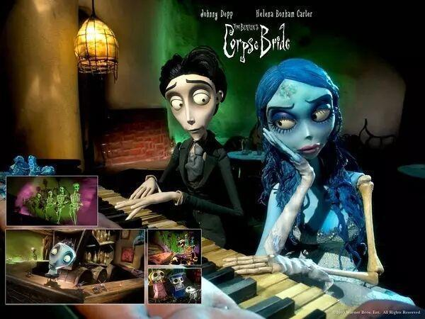
维克多的父母为儿子安排了一场婚姻，未婚妻是没落贵族小姐维多利亚。维克多内向敏感，不善表达，于是婚礼前夜来到小树林中暗暗排练宣誓仪式。然而，意外发生了。当他把戒指套进地上一根树枝上面时，地动山摇间眼前竟然出现了一个僵尸新娘。
僵尸新娘情真意切的说自己就是维克多的合法妻子。维克多惊异万分。在小树林里维克多不但认识了这个女子，还看到这片死人世界一片欢乐和睦的气氛，他被眼前的情景深深感染，畏惧渐渐散去。然而，在两个世界，两个新娘之间，维克多该如何抉择……
奇幻
海洋之歌
国家：爱尔兰 / 丹麦 / 比利时 / 卢森堡 / 法国
年份：2014
豆瓣评分：8.7
IMDb评分：8.2
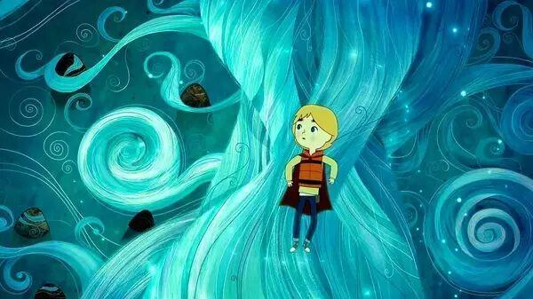
在一个风景如画的海中小岛，小男孩本和怀有身孕的母亲布罗娜渡过了最后一个快乐而难忘的夜晚。不久后，妹妹西尔莎（出生，而因母亲却撒手人寰。转眼过了六年，他们的父亲康纳始终未从丧妻之痛中走出，而充满幻想的西尔莎偶然发现妈妈留下的贝笛，结果险些溺毙大海，最终导致奶奶强制性地将两个孩子带离这座小岛。兄妹俩无法适应城市的生活，他们在街道游走的时候，意外遭遇了三个奇怪的小精灵。他们希望借助“海豹女”西尔莎的歌声回到故乡，神奇的冒险就此展开……
2
辉夜姬物语
国家：日本
年份：2013
豆瓣评分：8.3
IMDb评分：8.1
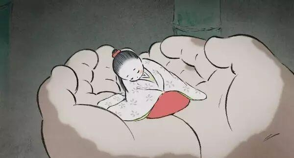
住在深山老林里的老爷爷一早进山砍竹子，结果竟在附近的一根发光的竹笋中发现了只有掌心大小的娃娃。没有子女的老爷爷兴奋不已，他双手捧着娃娃回到家中，而小家伙竟然在老奶奶的手中越变越大。之后的岁月里，舐犊情深的爷爷小心呵护他的公主，小女孩则以惊人的速度生长，她与村里的孩子们周游乡间，结识了诚实可靠的舍丸哥哥，而一首莫名的歌曲却令她潸然泪下。老爷爷在山里先后发现金子和美丽布匹，他决心让公主过上贵族的生活，于是举家搬到了京城的豪宅中。公主超凡脱俗，貌美绝伦，从此“辉耀姬”的名字在京城贵族间广为传颂。然而美丽女孩的笑容渐渐退去，这似乎并不是她所向往的生活……
3
攻壳机动队
国家：日本
年份：1995
豆瓣评分：8.9
IMDb评分：8.0
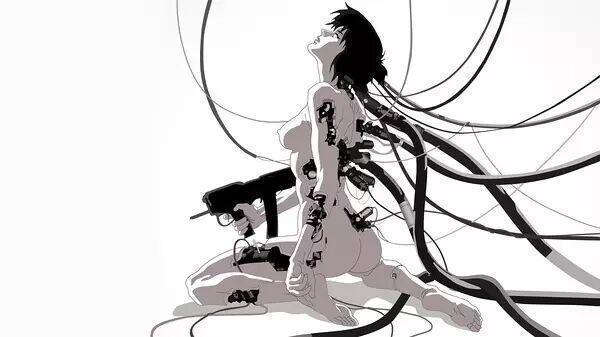
公元2029年，未来世界是高科技与信息化的世界。人类生活水平的提高伴随着犯罪活动的高科技化，于是，专门镇压高科技犯罪的特殊部队——公安9课成立了。队长草薙素子，作为一位全身“义体化”的女警，带领公安9课不断展开行动。
是次，公安9课帮助公安6课秘密解决了一位程序员外逃他国的麻烦琐事，又卷入传说中的黑客“傀儡师”的犯罪事件。当行动陷入僵局之际，傀儡师竟然不请自来，出现在公安9课！素子与她的战友们，不知不觉地被卷入了一场阴谋之中。
4
大圣归来
国家：中国
年份：2015
豆瓣评分：8.2
IMDb评分：7.3
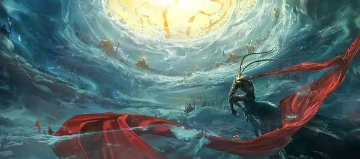
五百年前，由石猴变化而成的齐天大圣孙悟空大闹天宫，最终被如来佛祖镇在了五行山下。此去经年，长安城内突然遭到山妖洗劫，童男童女哭声连连，命悬一线。危机时刻，自幼被行脚僧法明抚养长大的江流儿救下了一个小女孩，结果反遭山妖追杀。经过一番追逐，江流儿无意中解除了孙悟空的封印，齐天大圣自然好好地将山妖教训了一番。因为封印未解开，悟空不得不护送江流儿和小女孩回长安，一路上又遭遇了猪八戒和白龙马。
与此同时，妖王绝不甘心失败，他躲在暗中，等待着给孙悟空一行致命一击的良机……
5
魁拔Ⅲ战神崛起
国家：中国
年份：2014
豆瓣评分：8.0
IMDb评分：6.7
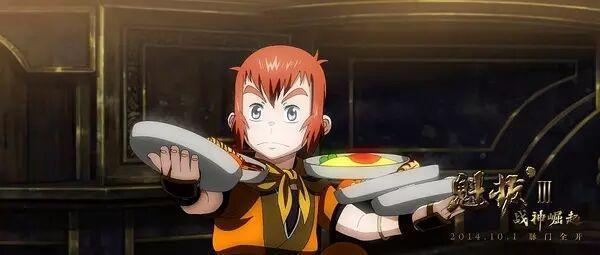
历经惨烈的元泱界大战，成功突破魁拔十二妖第一道防线的蛮吉、镜心一行，为追赶曲境一号再踏征途，却意外闯入萨库人大仓与粼妖姑娘海问香所设下的诡异防线。面对大仓与海问香的步步紧逼，蛮吉等人无奈应战。激战中，神秘少年敖江凭空出现、曲境一号舰长远浪更做出种种令人匪夷所思的决定，让本已复杂的局面，越发显得扑朔迷离；而机缘巧合下，脉门封闭已久的蛮吉竟意外开启六大脉门，化身无敌战神，携魁拔脉兽驰骋于漫天烽火中，上演了一场气势磅礴的惊世之战……
冒险
头脑特工队
国家：美国
年份：2015
豆瓣评分：8.7
IMDb评分：8.2
可爱的小女孩莱莉出生在明尼苏达州一个平凡的家庭中，从小她在父母的呵护下长大，脑海中保存着无数美好甜蜜的回忆。当然这些记忆还与几个莱莉未曾谋面的伙伴息息相关，他们就是人类的五种主要情绪：乐乐、忧忧、怕怕、厌厌和怒怒。乐乐作为团队的领导，她协同其他伙伴致力于为小主人营造更多美好的珍贵回忆。某天，莱莉随同父母搬到了旧金山，肮脏逼仄的公寓、陌生的校园环境、逐渐失落的友情都让莱莉无所适从，她的负面情绪逐渐累积，内心美好的世界渐次崩塌。
2
驯龙高手
国家：美国
年份：2010
豆瓣评分：8.7
IMDb评分：8.2

维京岛国的少年小嗝嗝是部落统领伟大的斯托里克的儿子，他非常想像自己的父亲一样亲手屠龙——这些飞龙是岛上维京人放牧羊群的主要天敌——但他每次出现在部落屠龙的战斗中都只给大家徒增烦恼。在一次对抗飞龙的战斗中，希卡普偷偷用射龙器击伤了一只最神秘的“夜之怒龙”，并背着族人放生、豢养，甚至驯服了这只龙，还给它起名“无牙”。希卡普的神秘行径引起了一同训练屠龙技巧的女孩阿斯特丽德的怀疑。阿斯特丽德发现了希卡普的秘密，却同时被身骑“无牙”御风而飞的美妙体验所震撼。格雷决定在屠龙成人礼上向远征归来的斯托里克和族人讲明真相，说服大家放弃屠龙，却偏偏弄巧成拙，害得“无牙”被俘，一场更大的灾难就在眼前……
3
乐高大电影
国家：澳大利亚 / 美国 / 丹麦
年份：2014
豆瓣评分：7.9
IMDb评分：7.8
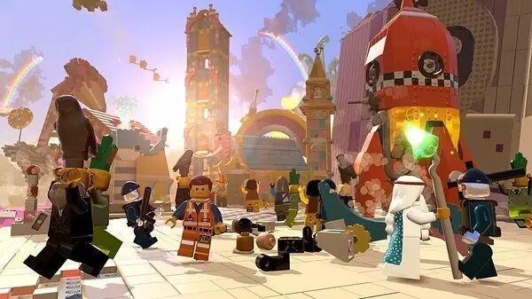
艾米特是乐高世界中一个普通到没有存在感的建筑师，他每天精神饱满，乐观向上，按照说明书的指示从事一天的活动。某天收工后，他意外掉入一个深洞，后背还黏了奇怪的东西，随后就被兼具凶暴和善良两面的警察带走问话。原来统治乐高世界的生意王对那些极富创造力的小人极为不满，他讨厌不同系列的乐高世界相互交叉，更讨厌脱离了说明书独辟蹊径的发明创造。因此他将所有世界隔开，囚禁了那些创意大师，还策划着一场可怕的阴谋。艾米特危机时刻被露西救下，并被先知维特鲁维斯认定为救世主。
暴风雨般的迫害袭向创意大师们，想象力贫乏的艾米特能否担此重任？
4
冰川时代
国家：美国
年份：2002
豆瓣评分：8.4
IMDb评分：7.6
冰河时期降至，动物们都急着迁徙到温暖的地方及储存食物。长毛象曼弗瑞德、树獭希德、剑齿虎迪亚戈为了帮助一个人类的婴儿回到父母身边，因而也掉了动物们迁徙的队伍。三只性格各异的动物，觉得集合力量帮助婴儿。一路上，善良的曼弗瑞德总觉得迪亚戈心怀鬼胎，想吃掉婴儿，互相猜疑。他们一起经历了无数艰难险阻，终于能够真诚相对。
当剑齿虎迪亚戈的同伴知道它身边正有一个婴儿，饥寒交迫的它们就想迪亚戈把婴儿交给它们当食物，迪亚戈已对可爱的小婴儿产生了感情，无法下手，而迪亚戈该如何选择呢？小婴儿又能否安全回到家中？
5
阿薇尔与虚构世界
国家：法国 / 比利时 / 加拿大
年份：2015
豆瓣评分：7.8
IMDb评分：7.4
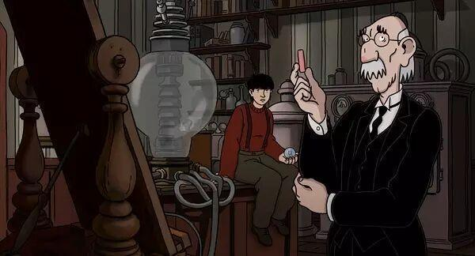
20 世纪中拿破仑五世统治的另一个法国，科学家70 年来不断失踪，飞行、电力甚至电影等伟大发明都成泡影，只有艾菲尔建起了第二座铁塔。煤与蒸气把天空弄得乌烟瘴气，出街要戴防毒面具，大皇宫变大温室。阿菲（玛莉安歌迪雅美丽声演）父母是科学家，也无端失踪，当老猫达尔文病到七彩，阿菲偷偷研制不死药，却因此逃亡历险，牙尖嘴利的达尔文、主意多多的怪爷爷、变节特工祖利亚也一起有难同当。
治愈
玛丽与马克思
国家：澳大利亚
年份：2009
豆瓣评分：8.9
IMDb评分：8.2
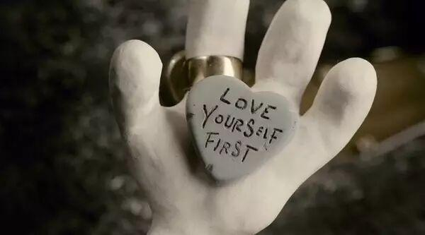
1976年，8岁的玛丽·黛西·丁格尔是澳大利亚墨尔本的一个小女孩，喜欢动画片“诺布利特”、甜炼乳和巧克力。玛丽的妈妈是个酒鬼，而在茶叶包装厂工作的父亲平日只喜欢制作鸟标本。孤独的玛丽没有朋友，某一天心血来潮给美国纽约市的马克思·杰瑞·霍罗威茨写了一封信询问美国小孩从哪里来，并附上一根樱桃巧克力棒。44岁的马克思患有自闭症及肥胖，碰巧也喜欢看“诺布利特”动画片及吃巧克力。二人的笔友关系从1976年维持到1994年，期间各自经历了许多人生起伏，直到成年的玛丽终于来到纽约看望马克思……
2
小王子
国家：法国 / 加拿大 / 意大利
年份：2015
豆瓣评分：8.0
IMDb评分：7.8
灰蒙蒙的都市丛林，美丽的小女孩眼神中没有渴望和雀跃，她跟随妈妈穿梭钢筋水泥的光影之间，按照社会既定法则亦步亦趋。她的未来似乎早被注定和规划，即使生日礼物也找不到些许惊奇。为了进入好学校，母女俩搬到郊外一幢独栋房子里，旁边则是一间与周遭格格不入的破房子。某天，一个飞机螺旋桨突然破墙而入，从而建立起女孩和隔壁那个怪爷爷的友谊。老人自称曾是一名飞行员，年轻时他迫降沙漠，在那里认识了有着纯真心灵的小王子。女孩听老人讲述着有着童话般瑰丽色彩的往事，不知不觉间心驰神往……
3
借东西的小人阿莉埃蒂
国家：日本
年份：2010
豆瓣评分：8.7
IMDb评分：7.6
虽然患有心脏方面的疾病，但是少年翔的父母依然对他疏于呵护。为了准备即将到来的手术，翔来到了位于偏远乡间的姨婆家静养。姨婆家位于一片幽静的丛林中，这是一幢有着上百年历史的欧式别墅。这里除了生活着姨婆和女佣阿春外，还有一个奇特的三口之家，“借东西一族”——小人阿莉埃蒂和她的爸爸妈妈，他们生活在别墅的地板下，只有几公分高，过着不为人类察觉的生活。遇到所需的日常用品时，便会在夜深人静之时偷偷潜入厨房借出来。翔无疑中瞥见阿莉埃蒂的身影，他有心接近这些传说中的小人，却不知不觉打扰了他们的生活……
4
麦兜故事
国家：中国
年份：2001
豆瓣评分：8.5
IMDb评分：7.5
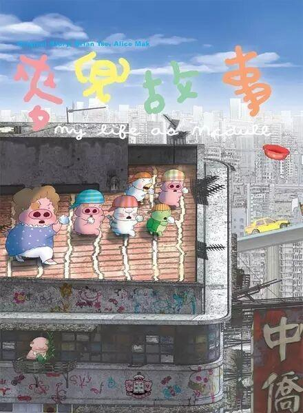
麦兜，一个长得不帅，头脑平平的小朋友。和妈妈麦太太，在香港一个叫大角咀的地方过着并不富裕却很快乐的生活。从麦兜带着妈妈的期望来到世界那一刻开始，他的脑海中一直飘满七彩幻想的泡泡。那个蓝天白云，椰林树影，水清沙白的童年的马尔代夫，那充满诱惑的圣诞火鸡的浓香，还有那个关于“抢包山”的奥运金牌的梦想，让麦兜平凡着他的平凡，却幸福着他的幸福。麦兜，和春田花花幼儿园的小朋友们一起，陪着我们，简单的在爱的呵护下慢慢长大。
5
猫的报恩
国家：日本
年份：2002
豆瓣评分：7.9
IMDb评分：7.3
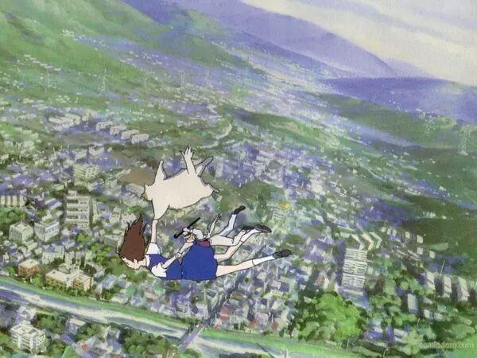
吉冈春是一个普普通通同时又有些迷糊的女高中生，某天放学的路上，她偶然救下了一只险些丧生车轮之下的小猫，谁曾想小猫竟然直立起来以人类的方式对女孩表示感谢。小春更想不到的是，她不经意的善举改变了自己的命运。原来小猫是猫王国的王子，为了报答小春的恩情，猫王国举国上下展开了令人啼笑皆非的报恩行动，只不过它们视为“上品”的老鼠令小春哭笑不得。不久后，小春接受王国的邀请前去做客，期间竟稀里糊涂答应成为王子的妃子。女孩眼看就彻底变成了一只猫，神秘的男爵成为她的救命稻草……
搞笑
海洋奇缘
国家：美国
年份：2016
豆瓣评分：7.8
IMDb评分：8.2
故事最早始于住在风和海的半神毛伊，他偷走了女神的特菲堤之心，导致岩浆魔鬼厄卡陷入疯狂的状态，南太平洋各小岛也面临着毁灭的威胁。一千多年后，某座小岛上的酋长女儿莫阿娜在父母的呵护下渐渐长大，童年时她曾偶然捡到特菲堤之心，亦曾受到大海的召唤，然而父亲却严厉禁止莫阿娜出海，即使小岛正遭受着死亡的威胁。从奶奶那里，莫阿娜知晓了他们这一族人的历史，于是为了拯救小岛，她依然出海去寻找被困在某地的毛伊，好让他归还特菲堤之心。历经千辛万苦，莫阿娜终于见到了这个传说中的高傲自大的半神。而毛伊则担心特菲堤之心带来霉运拒绝前往。
只不过在命运的指引下，毛伊还是随着莫阿娜踏上未知的征途……
2
美食总动员
国家：美国
年份：2007
豆瓣评分：8.2
IMDb评分：8.0
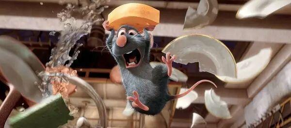
小老鼠雷米在嗅觉方面有着无与伦比的天赋，不想过与垃圾堆为伴的生活，心怀成为五星大厨的梦想。
一个偶然的机会，他认识了古斯特餐厅的学徒林奎尼，这个倒霉的学徒生性害羞，在厨艺上更是没有什么天赋，并且遭到餐厅大厨的排挤，即将被解雇。这一人一鼠结成了奇特的联盟：雷米奉献自己极富创造力的大脑。操作林奎尼前台“表演”。
在雷米的帮助下，林奎尼不但成为新的“天才厨师”，幸运不断降临，然而麻烦也接踵而至……
3
无敌破坏王
国家：美国
年份：2012
豆瓣评分：8.7
IMDb评分：7.8
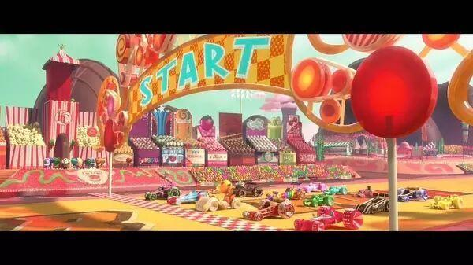
无敌破坏王生活在一个80年代出品的低精度游戏中。他的设定身份是一个反派，每天的生活就是在游戏《快手阿修》中大搞破坏，其后由玩家操作的英雄人物快手阿修会及时赶到进行修补，赢得奖牌，包揽一切荣耀。身为反派，破坏王厌倦了自己的生活，他终于决定改变。单纯的他以为只要自己也能得到一枚奖牌，就可以摆脱反派的身份，于是某日在游戏厅歇业后，破坏王偷偷离开了自己的游戏，前去闯荡其他电子游戏的世界。
在途中，破坏王结识了来自《英雄使命》的冷酷队长和来自90年代糖果赛车游戏《甜蜜冲刺》的小女孩云妮。破坏王所属的游戏《快手阿修》由于失去了他被认定为系统错误，如不尽快返回，则游戏就会被永久删除；而《甜蜜冲刺》的游戏世界则在悄悄酝酿着一场巨大的、威胁到整个游戏世界的阴谋。这也许是无敌破坏王实现梦想的机会，但也可能是一条不归路……
4
了不起的狐狸爸爸
国家：美国
年份：2009
豆瓣评分：8.4
IMDb评分：7.8
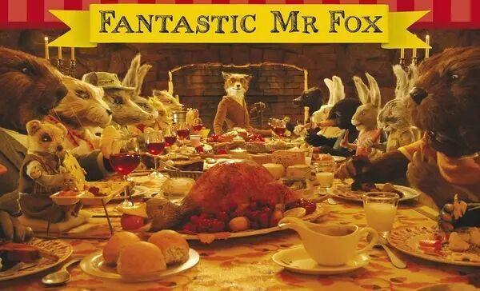
狐狸爸爸和狐狸太太在乳鸽场偷窃时得知狐狸太太怀孕，狐狸爸爸承诺二人脱逃后不再行窃。两年后，狐狸爸爸不顾獾律师的反对，执意购入了位于养鸡场、火腿商和苹果酒三农场主地界上的树屋。一心想成为运动员的狐狸儿子艾什对新搬来暂住的表兄克里斯托弗森又妒又恨；而狐狸爸爸则再次按奈不住，联合树屋管理员负鼠凯利秘密对三农场主再行偷窃，直到引来一场人和动物的殊死大战……
5
兰戈
国家：美国
年份：2011
豆瓣评分：7.8
IMDb评分：7.2
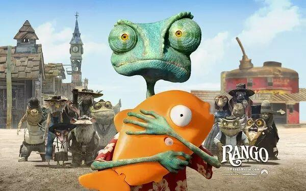
兰戈是一只干瘦、翠绿的蜥蜴，他住在鱼缸里，蓝天白云椰子树的假相让他倍感无聊，这个酷爱幻想和表演的家伙只得在头脑中编出属于自己的英雄剧。可就在某天，一个意外将他驱赶出惯常的方寸空间，兰戈莫名其妙来到了西部荒原的公路上。在沙漠中穿行的时候，兰戈遭到猎鹰的袭击。经过一番周折，他来到了名为黄沙（Dirt）的小镇，这里住着许多昆虫和动物，破败不堪，宛若死城。兰戈意外干掉了凶恶的猎鹰，由此被镇上的居民视为英雄，他也乐于享受这种荣誉，可是英雄毕竟不好当……
虽然不是什么权威的榜单，但是希望这份推荐能够缓解你的剧荒(•̀ᴗ•́)و ̑̑ 快把你想要推荐的片子写在留言里告诉大家吧！

电协信息部 白金朋